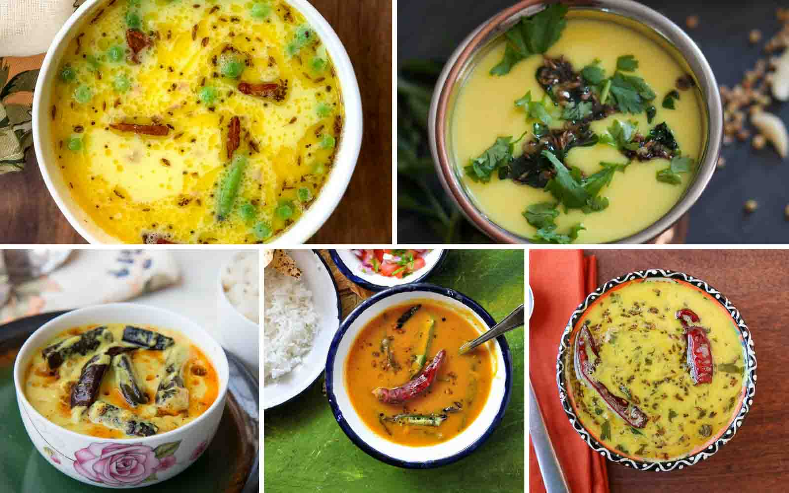

🍽 KADHI PAKORA 🍽

The Moringa Kadhi Pakora is comforting spicy yogurt based curry cooked with gram flour fitters along with drumstick leaves and tempered with cumin seeds and green chilli. Serve it along with Green Moong Dal Khichdi for a delicious dinner.
Ingredients
-
For the Pakora:
- 1 cup Drumstick Leaves
- 3/4 cup Gram flour (besan)
- 1/4 Enos fruit salt , or baking powder
- 1 pinch Asafoetida (hing)
- 1 tsp Red Chilli powder
- 1 tsp Ajwain
- 1/4 tsp Asafoetida (hing)
- 1/2 tsp Turmeric Powder
- Sunflower Oil , for frying
-
For the Gravy:
- 1 cup Curd
- 1/4 cup Gram flour (besan)
- Salt
- 1/2 tsp Turmeric Powder
-
For Tadka:
- 1 tsp Ghee
- 1 Fresh Red Chilli
- 1 tsp Mustard seeds
- 2 inch Cinnamon Stick (Dalchini)
- 1 sprig Curry leaves
- Coriander (Dhania) Leaves , for garnish

Directions
- To begin making Drumstick Leaves Kadhi Pakoda Recipe, the drumstick leaves pakoda should be prepared.
- First wash the drumstick leaves and chop the leaves.
- Take a large bowl and mix all the ingredients for the pakoras - Gram Flour, Red Chili powder, Drumstick leaves, Turmeric powder, Enos Fruits salt, Asafoetida, Salt and Carom seeds.
- To this mixture, add the water a few drops at a time. The final mixture should neither dry or soggy. Divide the mixture into 8-10 pakora balls.
- Into a paniyaram pan, add a few drops of oil into the cavities and add the pakora into the cavities and pan fry them until it is brown and crisp on all sides.
- Once the moringa pakoras are done, keep them aside. The next step is to make the Kadhi
- In a saucepan add the curd, gram flour, turmeric powder and salt. Add 2 cups of water and mix the kadhi mixture well. Turn the heat to high and keep whisking the kadhi until it becomes smooth and slightly thick.
- While the kadhi is simmering, heat ghee in a tadka pan; Add the mustard seeds, cumin seeds, cinnamon stick, red chillies and curry leaves. Allow them to crackle.
- Add this to the kadhi mixture and also drop in the moringa pakoras. Give the Morinka Kadhi Pakora a brisk boil and turn off the heat.
- Once done, give the Drumstick Leaves Kadhi Pakoda a taste and adjust the salt and spices accordingly. Once done, serve hot.
Serve Drumstick Leaves Kadhi Pakoda Recipe along with Green Moong Dal Khichdi for a delicious weeknight dinner.